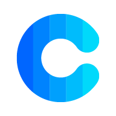

嵌入式大佬

嵌入式小菜鸡一枚

稀土掘金是一个技术博客平台，是程序员发布自己的技术文章、分享知识的地方

Open Source Software Insight

A newsletter of JavaScript articles, news and cool projects

JavaScript 生态系统的年度开发人员调查

周周尝鲜，人工筛选前端圈每周最新资讯。—— 由 童欧巴 创作

Roadmap to becoming a web developer.

一个免费的CDN开源项目

为你的开源项目生成高质量小徽章图标

namae可让您给您的应用程序、Web服务或组织起一个好名字

为开发人员分享快速参考备忘清单【速查表】

对浏览器支持的 API 兼容性查询

配置高性能、安全、稳定的NGINX服务器的最简单方法

稳定、快速、免费的前端开源项目 CDN 加速服务

发现免费可商用的资源
🦕 常用正则大全, 支持web / vscode / idea / Alfred Workflow多平台


从2005年开始记录网络技术，包括 CSS、 HTML 和 JavaScript。

《ECMAScript 6 入门教程》是一本开源的 JavaScript 语言教程，全面介绍 ECMAScript 6 新引入的语法特性

《TypeScript Deep Dive》 是一本很好的开源书，从基础到深入，很全面的阐述了 TypeScript 的各种魔法，不管你是新手，还是老鸟，它都将适应你

一份高质量 Rust 教程
在线工具,开发人员工具,代码格式化、压缩、加密、解密,下载链接转换,ico图标制作,字帖生成

菜鸟工具，为开发设计人员提供在线工具，提供在线PHP、Python、 CSS、JS 调试，中文简繁体转换，进制转换等工具
免费在线流程图思维导图
在线生成 Terminal GIF

一个 Web 工具，用于探索由各种解析器生成的 AST 语法树

各类数据格式与对象转换

开源 API 开发生态系统
一个简洁的在线 JSON 解析器

API 文档、API 调试、API Mock、API 自动化测试

全球最大的软件项目托管平台，发现优质开源项目
Gitee 是中国领先的基于 Git 的代码托管平台，类似于全球知名的 GitHub

更快地交付安全代码，部署到任何云，并推动业务成果

Gitea 是一个开源社区驱动的轻量级代码托管解决方案，后端采用 Go 编写，采用 MIT 许可证.

提供一站式研发管理平台及云原生开发工具，让软件研发如同工业生产般简单高效，助力企业提升研发管理效能


Vercel将最好的开发人员体验与对最终用户性能的执着关注相结合

Netlify 是一家提供静态网站托管的云平台，支持从 Github, GitLab, Bitbucket 等代码仓库中自动拉取代码 然后进行项目打包和部署等功能

一个开源和自我托管的 Heroku/Netlify 替代品
全球最大的软件项目托管平台，发现优质开源项目

带上你的代码，剩下交给我们

Supabase 是一个开源的后端即服务（BaaS）平台，它可以帮助开发者快速构建应用程序，无需编写后端代码。
CodeSandbox是一个在线代码编辑器和原型工具，可以更快地创建和共享web应用程序
是构建、测试和发现前端代码的最佳场所

Stackblitz在流程中保持即时的开发体验。没有更多的小时储存/拉/安装本地-只需点击，并开始编码
vscode官方提供在线Web版vscode代码编写网站
用于创建实时运行的代码编辑经验

渐进式 JavaScript 框架
为 Vue.js 提供富有表现力、可配置的、方便的路由

使用 Nuxt 自信地构建您的下一个 Vue.js 应用程序。使 Web 开发简单而强大。

您将会喜欢使用的 Vue 状态管理
基本 Vue 合成实用程序的集合
一个 Vite 原生单元测试框架。它很快！
用于构建用户界面的 JavaScript 库
Next.js 为您提供生产环境所需的所有功能以及最佳的开发体验：包括静态及服务器端融合渲染、 支持 TypeScript、智能化打包、 路由预取等功能 无需任何配置

一种小型、快速且可扩展的 Bearbones 状态管理解决方案，使用简化的通量原理。拥有基于钩子的舒适 API，不是样板文件或固执己见。
一个强大的 React Hooks 库

用于数据请求的 React Hooks 库

适用于 TS/JS、React、Solid、Vue 和 Svelte 的强大异步状态管理

Framer Motion是一个用于React的开源动画库，提供简单易用的API来创建流畅、高性能的动画效果，使Web应用程序和界面变得更加生动和吸引人。

用 Umi 构建你的下一个应用，带给你简单而愉悦的 Web 开发体验

Tailwind CSS 是一个功能类优先的 CSS 框架，它集成了诸如 flex, pt-4, text-center 和 rotate-90 这样的的类，它们能直接在脚本标记语言中组合起来，构建出任何设计

Windi CSS 是下一代工具优先的 CSS 框架

现存最小、最快、功能最齐全的完整 Tailwind-in-JS 解决方案

即时按需原子 CSS 引擎

Bootstrap 是全球最受欢迎的前端开源工具库，它支持 Sass 变量和 mixin、响应式栅格系统、自带大量组件和众多强大的 JavaScript 插件。基于 Bootstrap 提供的强大功能，能够让你快速设计并定制你的网站
w3schools 从基础到高级的CSS教程

CSS灵感
CSS常用样式

一个精心制作的集合设计的重点是流动性，简单性和易用性。使用最小标记的 CSS 支持

一个像素风格的CSS框架

claymorphism 泥陶态风格CSS
Animation Made Easy

我们赋予任何人创建、分享和使用用 CSS 和 HTML 制作的漂亮自定义元素的权力。

透明玻璃态生成器
收集不同的发电机，让您的生活更轻松。

快速轻松地实现基于 CSS 阴影的绝佳工具。您只需要指定一些阴影设置，代码就在您的路上。

花式边界半径,有助于创建 CSS 花式边框。

创建调色板


基于 Vue 3，面向设计师和开发者的组件库

一个 Vue 3 组件库比较完整，主题可调，使用 TypeScript，快 有点意思

一套企业级 UI设计语言和 React 组件库
设计精美的组件，您可以将其复制并粘贴到您的应用程序中。无障碍。可定制。开源。
TDesign 是腾讯各业务团队在服务业务过程中沉淀的一套企业级设计体系
字节跳动出品的企业级设计系统
Vuetify 是一个 Vue UI 库，包含手工制作的精美材料组件。不需要设计技能 - 创建令人惊叹的应用程序所需的一切都触手可及
当下流行的 React UI 框架

Vben是一个��基于Vue3、Vite、TypeScript等最新技术栈开发的后台管理框架

前端框架开Party🎉，Web 组件 JS 框架通过其语法和特性进行概述

一个 JavaScript 的实用工具库, 表现一致性, 模块化, 高性能, 以及可扩展
wasm 是一个可移植、体积小、加载快并且兼容 Web 的全新格式
超强大h5动画库
强大的3D-Js库

Jest 是一个令人愉快的 JavaScript 测试框架，注重简单性。

对任何在浏览器中运行的东西进行快速、简单和可靠的测试。

Playwright 为现代网络应用程序提供了可靠的端到端测试。

Node.js 是一个基于 Chrome V8 引擎的 JavaScript 运行时

一个现代的JavaScript和TypeScript运行时

Bun 是一个快速的一体化 JavaScript 运行时

NPM是世界上最大的包管理器

Yarn 是一个软件包管理器，还可以作为项目管理工具。无论你是小型项目还是大型单体仓库（monorepos），无论是业余爱好者还是企业用户，Yarn 都能满足你的需求

速度快、节省磁盘空间的软件包管理器

“Nodejs技术栈” 是作者 @五月君 从事 Node.js 开发以来的学习历程，希望这些分享能帮助到正在学习、使用 Node.js 的朋友们
Axios 是一个基于 promise 的网络请求库，可以用于浏览器和 node.js

基于 Node.js 平台，快速、开放、极简的 Web 开发框架

用于构建高效且可伸缩的服务端应用程序的渐进式 Node.js 框架
Deno 下一代 Web 框架，专注于速度、可靠性和简单性的构建。

Socket.IO 是一个可以在浏览器与服务�器之间实现实时、双向、基于事件的通信的工具库

tRPC 是一个轻量级的、类型安全的远程过程调用框架，它使用 TypeScript 进行开发，可以帮助开发者轻松地编写和部署高性能的分布式应用程序。

Socket.IO 是一个可以在浏览器与服务器之间实现实时、双向、基于事件的通信的工具库
TypeORM 是一个 ORM 框架，它可以运行在 NodeJS、Browser、Cordova、PhoneGap、Ionic、React Native、Expo 和 Electron 平台上，可以与 TypeScript 和 JavaScript (ES5,ES6,ES7,ES8)一起使用

Prisma 下一代 Node.js 和 TypeScript 的ORM框架

GraphQL 既是一种用于 API 的查询语言也是一个满足你数据查询的运行时

一个基于 JavaScript 的开源可视化图表库

蚂蚁集团全新一代数据可视化解决方案,让数据栩栩如生


webpack 是一个现代 JavaScript 应用程序的静态模块打包器(module bundler)。当 webpack 处理应用程序时，它会递归地构建一个依赖关系图(dependency graph)，其中包含应用程序需要的每个模块，然后将所有这些模块打包成一个或多个 bundle

Rollup 是 JavaScript 的模块打包器，它将小段代码编译成更大、更复杂的代码，例如库或应用程序

下一代的前端工具链，为开发提供极速响应

Turborepo 是一个用于 JavaScript 和 TypeScript 代码库的高性能构建系统。

Turbopack 是一个用 Rust 编写的针对 JavaScript 和 TypeScript 优化的增量式捆绑包。

SWC 是下一代快速开发工具的可扩展的基于 Rust 的平台。
面向团队的专业 UI/UX 设计工具，多人同时编辑、随时在线评审、设计一键交付，让想法更快实现
可云端编辑的专业级 UI 设计��工具，为中国设计师量身打造，Windows 也能用的「协作版 Sketch」

Figma 是为 UI 设计而生的设计工具，除了有和 Sketch 一样基本的操作和功能，还有许多专为 UI 设计而生的强大功能。

一站式完成原型、设计、交互与交付，为数字化团队协作提效

数千个图标，一个统一的框架

Icon Explorer with Instant searching, powered by Iconify

iconfont-国内功能很强大且图标内容很丰富的矢量图标库，提供矢量图标下载、在线存储、格式转换等功能
简单美丽的开源图标

一个不断更新的设计项目与美丽的SVG图像，使用完全免费

图标、插图、照片、音乐和设计工具

Emoji表情大全
数百万个自动生成的渐变的网站
一个生成渐变色背景的网站

一个动态生成的可自定义 SVG 打字效果

使用 JavaScript，HTML 和 CSS 构建跨平台的桌面应用程序

Tauri是一个框架，用于为所有主要桌面平台构建小巧、快速的二进制文件

Flutter 是 Google 开源的应用开发框架，仅通过一套代码库，就能构建精美的、原生平台编译的多平台应用

uni-app 是一个使用 Vue.js 开发所有前端应用的框架，开发者编写一套代码，可发布到iOS、Android、Web（响应式）、以及各种小程序（微信/支付宝/百度/头条/QQ/快手/钉钉/淘宝）、快应用等多个平台

Taro 是一个开放式跨端跨框架解决方案，支持使用 React/Vue/Nerv 等框架来开发 微信 / 京东 / 百度 / 支付宝 / 字节跳动 / QQ / 飞书 小程序 / H5 / RN 等应用


Vue 驱动并使用Vite构建的静态网站生成器
Vue 驱动的静态网站生成器

快速构建以内容为核心的最佳网站
快速、简洁且高效的博客框架

GitBook帮助您为用户发布漂亮的文档，并集中您的团队的知识进行高级协作

docsify 可以快速帮你生成文档网站

WordPress是一款能让您建立出色网站、博客或应用程序的开源软件
针对用户、组织和存储库的非官方 GitHub 星级排名
Create your own metrics
一个Github �个人主页 README 生成器
Github 在你的 README 中获取动态生成的 GitHub 统计信息！